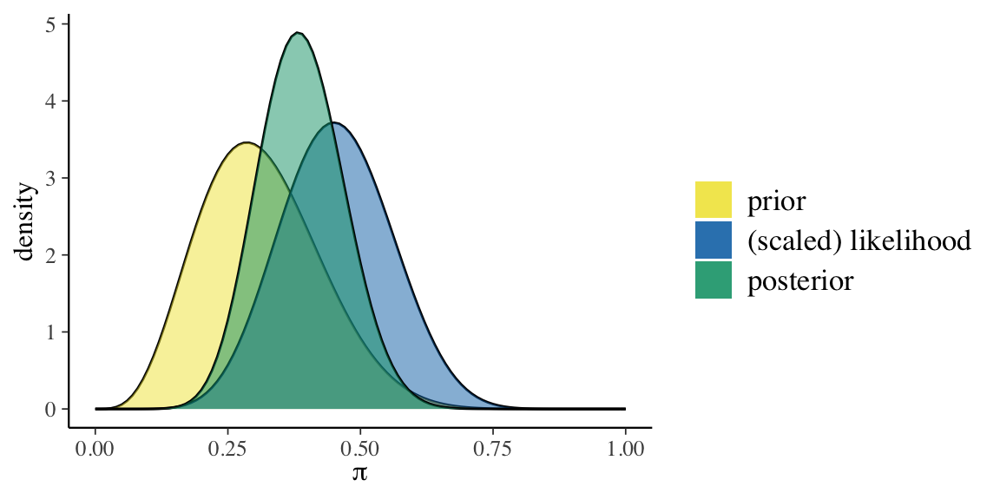
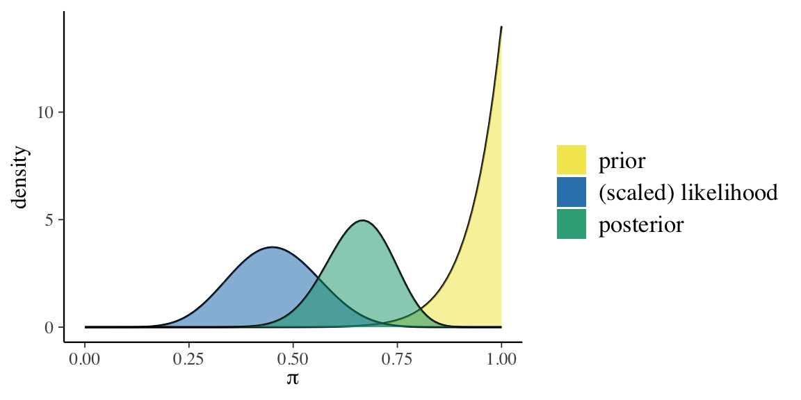
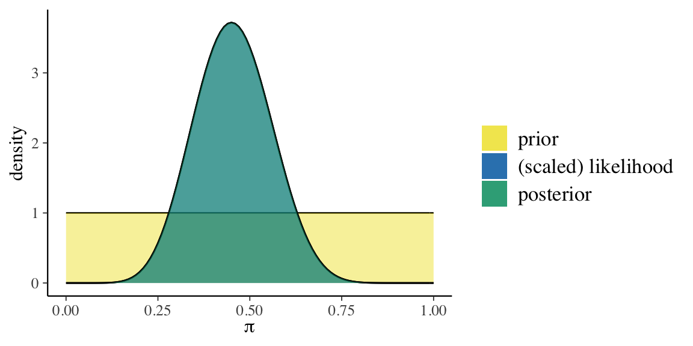

Capitolo 2 L’effetto della distribuzione a priori sulla distribuzione a posteriori
La notazione \(p(\theta \mid y) \propto p(\theta) \ p(y \mid \theta)\) rende particolarmente chiaro che la distribuzione a posteriori è un “miscuglio” della distribuzione a priori e della verosimiglianza. Prima di preoccuparci di come calcolare la distribuzione a posteriori, cerchiamo di capire meglio cosa significa “mescolare” la distribuzione a priori e la verosimiglianza. Considereremo qui un esempio fornito da Johnson, Ott, and Dogucu (2022). Nel fumetto di Alison Bechdel The Rule, un personaggio afferma di guardare un film solo se soddisfa le seguenti tre regole (Bechdel 1986):
- almeno due caratteri nel film devono essere donne;
- queste due donne si parlano;
- parlano di qualcosa altro oltre a parlare di qualche uomo.
Questi criteri costituiscono il test di Bechdel per la rappresentazione delle donne nei film. Johnson, Ott, and Dogucu (2022) pongono la seguente domanda “Quale percentuale dei film che avete visto supera il test di Bechdel?”
Sia \(\pi \in [0, 1]\) una variabile casuale che indica la proporzione sconosciuta di film che superano il test di Bechdel. Tre amiche — la femminista, l’ignara e l’ottimista — hanno opionioni diverse su \(\pi\). Riflettendo sui film che ha visto, la femminista capisce che nella maggioranza dei film mancano personaggi femminili forti. L’ignara non ricorda bene i film che ha visto, quindi non sa quanti film superano il test di Bechdel. Infine, l’ottimista pensa che, in generale, le donne sono ben rappresentate all’interno dei film: secondo lei quasi tutti i film superano il test di Bechdel. Le tre amiche hanno dunque tre modelli a priori diversi di \(\pi\).
Abbiamo visto in precedenza come sia possibile usare la distribuzione Beta per rappresentare le credenze a priori. Ponendo la gran parte della massa della probabilità a priori su valori \(\pi < 0.5\), la distribuzione a priori \(\text{Beta}(5, 11)\) riflette il punto di vista femminista secondo il quale la maggioranza dei film non supera il test di Bechdel. Al contrario, la \(\text{Beta}(14,1)\) pone la gran parte della massa della distribuzione a priori su valori \(\pi\) prossimi a 1, e corrisponde quindi alle credenze a priori dell’amica ottimista. Infine, una \(\text{Beta}(1 ,1)\) o \(Unif(0, 1)\), assegna lo stesso livello di plausibilità a tutti i valori \(\pi \in [0, 1]\), e corrisponde all’incertezza a priori dell’ignara.
Nell’esempio di Johnson, Ott, and Dogucu (2022), le tre amiche decidano di rivedere un campione di \(n\) film e di registrare \(y\), il numero di film che supera il test di Bechdel. Se \(y\) corrisponde al numero di “successi” in un numero fisso di \(n\) prove Bernoulliane i.i.d., allora la dipendenza di \(y\) da \(\pi\) viene specificata nei termini di un modello binomiale. Quindi, per ciascuna delle tre amiche è possibile scrivere un modello Beta-Binomiale
\[\begin{align} Y \mid \pi & \sim \text{Bin}(n, \pi) \notag\\ \pi & \sim \text{Beta}(\alpha, \beta) \notag \end{align}\]
che utilizza parametri \(\alpha\) e \(\beta\) diversi per la distribuzione a priori, il che conduce a tre diverse distribuzioni a posteriori per il parametro sconosciuto \(\pi\):
\[\begin{equation} \pi \mid (Y = y) \sim \text{Beta}(\alpha + y, \beta + n - y). \end{equation}\]
Johnson, Ott, and Dogucu (2022) si chiedono come le credenze a priori delle tre amiche influenzano le conclusioni a posteriori a cui esse giungono, dopo avere osservato i dati. Si chiedono inoltre in che modo la dimensione del campione moduli l’influenza della distribuzione a priori sulla distribuzione a posteriori. Per rispondere a queste domande, Johnson, Ott, and Dogucu (2022) consideriamo tre diversi scenari:
- gli stessi dati osservati, ma distribuzioni a priori diverse;
- dati diversi, ma la stessa distribuzione a priori;
- dati diversi e distribuzioni a priori diverse.
2.1 Stessi dati ma diverse distribuzioni a priori
Iniziamo con lo scenario che descrive il caso in cui abbiamo gli stessi dati ma diverse distribuzioni a priori. Supponiamo che le tre amiche decidano di guardare insieme 20 film selezionati a caso:
data(bechdel, package = "bayesrules")
set.seed(84735)
bechdel_20 <- bechdel %>%
sample_n(20)
bechdel_20 %>%
head(3)
#> # A tibble: 3 × 3
#> year title binary
#> <dbl> <chr> <chr>
#> 1 2005 King Kong FAIL
#> 2 1983 Flashdance PASS
#> 3 2013 The Purge FAILDi questi 20 film, solo il 45% (\(y\) = 9) passa il test di Bechdel:
bechdel_20 %>%
janitor::tabyl(binary) %>%
janitor::adorn_totals("row")
#> binary n percent
#> FAIL 11 0.55
#> PASS 9 0.45
#> Total 20 1.00Esaminiamo ora le tre distribuzioni a posteriori. Per la femminista abbiamo:
bayesrules:::plot_beta_binomial(
alpha = 5, beta = 11, y = 9, n = 20
)
bayesrules:::summarize_beta_binomial(
alpha = 5, beta = 11, y = 9, n = 20
)
#> model alpha beta mean mode var
#> 1 prior 5 11 0.3125000 0.2857143 0.01263787
#> 2 posterior 14 22 0.3888889 0.3823529 0.00642309
#> sd
#> 1 0.11241827
#> 2 0.08014418Per l’ottimista abbiamo:
bayesrules:::plot_beta_binomial(
alpha = 14, beta = 1, y = 9, n = 20
)
bayesrules:::summarize_beta_binomial(
alpha = 14, beta = 1, y = 9, n = 20
)
#> model alpha beta mean mode var
#> 1 prior 14 1 0.9333333 1.0000000 0.003888889
#> 2 posterior 23 12 0.6571429 0.6666667 0.006258503
#> sd
#> 1 0.06236096
#> 2 0.07911070Infine, per l’ignara troviamo
bayesrules:::plot_beta_binomial(
alpha = 1, beta = 1, y = 9, n = 20
)
bayesrules:::summarize_beta_binomial(
alpha = 1, beta = 1, y = 9, n = 20
)
#> model alpha beta mean mode var sd
#> 1 prior 1 1 0.5000000 NaN 0.08333333 0.2886751
#> 2 posterior 10 12 0.4545455 0.45 0.01077973 0.1038255Per calcolare la distribuzione a posteriori, ho qui usato le funzioni del pacchetto bayesrules. Ma nel caso Beta-Binomiale è facile trovafre i parametri della distribuzione a posteriori. Per esempio, nel caso della femminista, la distribuzione a posteriori è una Beta di parametri
\[
\alpha_{post} = \alpha_{prior} + y = 5+9 = 14
\]
e
\[
\beta_{post} = \beta_{prior} + n - y = 11 + 20 - 9 = 22.
\]
L’aggiornamento bayesiano indica che le tre amiche ottengono valori per la media (o la moda) a posteriori per \(\pi\) molto diversi. Dunque, anche dopo avere visto 20 film, le tre amiche non si trovano d’accordo su qual è la proporzione di film che passano il test di Bechdel.
Questo non dovrebbe sorprenderci. L’amica ottimista aveva opinioni molto forti sul valore di \(\pi\) e i pochi nuovi dati che le sono stati forniti non sono riusciti a convincerla a cambiare idea: crede ancora che i valori di \(\pi\) superiori a 0.5 siano i più plausibili. Lo stesso si può dire, all’estremo opposto, dell’amica femminista: anche lei continua a credere che i valori di \(\pi\) inferiori a 0.5 siano i più plausibili. Infine, l’ignara non aveva nessuna opinione a priori su \(\pi\) e, anche dopo avere visto 20 film, con una proporzione osservata di successi pari a 0.45, continua a credere che il valore \(\pi\) più plausibile sia quello intermedio, ovvero nell’intorno di 0.5.
2.2 Dati diversi, stessa distribuzione a priori
Supponiamo che l’amica ottimista abbia tre amiche, Maria, Anna e Sara, tutte ottimiste come lei. Chiede a Maria, Anna e Sara di fare l’esperimento. Maria guarda 13 film; di questi 6 passano il test di Bechdel. Anna guarda 63 film; di questi 29 passano il test di Bechdel. Sara guarda 99 film; di questi 46 passano il test di Bechdel.
Per Maria, Anna e Sara, la credenza a priori su \(\pi\) è la stessa: Beta(14, 1). Come diventano le tre distribuzioni a posteriori?
p1 <- bayesrules:::plot_beta_binomial(
alpha = 14, beta = 1, y = 6, n = 13
) + theme(legend.position = "none")
p2 <- bayesrules:::plot_beta_binomial(
alpha = 14, beta = 1, y = 29, n = 63
) + theme(legend.position = "none")
p3 <- bayesrules:::plot_beta_binomial(
alpha = 14, beta = 1, y = 46, n = 99
) + theme(legend.position = "none")
p1 + p2 + p3Figura 2.1: Aggiornamento bayesiano per Maria, Anna e Sara.
Notiamo due cose. All’aumentare delle informazioni disponibili (ovvero, l’ampiezza del campione), la distribuzione a posteriori si allontana sempre più dalla distribuzione a priori, e si avvicina sempre più alla verosimiglianza. In secondo luogo, all’aumentare dell’ampiezza del campione, la varianza della distribuzione a posteriori diminuisce sempre di più, ovvero, diminuisce l’incertezza su quelli che sono i valori plausibili per \(\pi\).
2.3 Dati diversi e diverse distribuzioni a priori
Nella figura successiva esaminiamo la distribuzione a posteriori incrociando tre diversi set di dati (\(y\) = 6, \(n\) = 13;, \(y\) = 29, \(n\) = 63; \(y\) = 66, \(n\) = 99) con tre diverse distribuzioni a priori [Beta(14, 1), Beta(5, 11), Beta(1, 1)].
p1 <- bayesrules:::plot_beta_binomial(
alpha = 14, beta = 1, y = 6, n = 13
) + theme(legend.position = "none")
p2 <- bayesrules:::plot_beta_binomial(
alpha = 14, beta = 1, y = 29, n = 63
) + theme(legend.position = "none")
p3 <- bayesrules:::plot_beta_binomial(
alpha = 14, beta = 1, y = 46, n = 99
) + theme(legend.position = "none")
p4 <- bayesrules:::plot_beta_binomial(
alpha = 5, beta = 11, y = 6, n = 13
) + theme(legend.position = "none")
p5 <- bayesrules:::plot_beta_binomial(
alpha = 5, beta = 11, y = 29, n = 63
) + theme(legend.position = "none")
p6 <- bayesrules:::plot_beta_binomial(
alpha = 5, beta = 11, y = 46, n = 99
) + theme(legend.position = "none")
p7 <- bayesrules:::plot_beta_binomial(
alpha = 1, beta = 1, y = 6, n = 13
) + theme(legend.position = "none")
p8 <- bayesrules:::plot_beta_binomial(
alpha = 1, beta = 1, y = 29, n = 63
) + theme(legend.position = "none")
p9 <- bayesrules:::plot_beta_binomial(
alpha = 1, beta = 1, y = 46, n = 99
) + theme(legend.position = "none")
(p1 + p2 + p3) / (p4 + p5 + p6) / (p7 + p8 + p9)Figura 2.2: Sulle colonne (a partire da sinistra) i dati utilizzati sono, rispettivamente, (y = 6, n = 13), (y = 29, n = 63) e (y = 66, n = 99). Sulle righe (a partire dall’alto), le distribuzioni a priori usate sono: Beta(14, 1), Beta(5, 11) e Beta(1, 1).
La figura indica che, se il campione è grande, una distribuzione a priori debolmente informativa ha uno scarso effetto sulla distribuzione a posteriori. Invece, se il campione è piccolo, anche una distribuzione a priori debolmente informativa ha un grande effetto sulla distribuzione a posteriori, in confronto ad una distribuzione a priori non informativa.
La conclusione che possiamo trarre dall’esempio di Johnson, Ott, and Dogucu (2022) è molto chiara: l’aggiornamento bayesiano è molto simile ai processi di ragionamento del senso comune. Quando le evidenze (i dati) sono deboli, non c’è ragione di cambiare idea (le nostre credenze “a posreriori” sono molto simili a ciò che pensavamo prima di avere osservato i dati). Quando le evidenze sono irrefutabili, dobbiamo cambiare idea, ovvero modellare le nostre credenze su ciò che dicono i dati, quali che siano le nostre credenze pregresse. Non fare ciò significherebbe vivere in un mondo di fantasia (e avere scarsissime possibilità di adattarci al mondo empirico). L’aggiornamento bayesiano esprime in maniera quantitativa e precisa (ottimale) ciò che ci dicono le nostre intuizioni.
Incredibilmente, l’approccio frequentista nega questa logica. I test frequentisti non tengono conto delle conoscenze pregresse. Dunque, se un test frequentista, calcolato un un piccolo campione (ovvero, quando i dati sono molto deboli), suggerisce che dovremmo farci un’opinione di un certo tipo sul fenomeno in esame, l’indicazione è di prendere seriamente il risultato del test quali siano le evidenze precedenti – le quali, possibilmente, mostrano che il risultato del test non ha senso. È sorprendente che un tale modo di pensare possa essere preso sul serio nella comunità scientifica, ma alcuni ricercatori continuano a seguire questo modo di (s)ragionare.
2.4 Collegare le intuizioni alla teoria
L’equilibrio che abbiamo osservato nell’esempio precedente nella distribuzione a posteriori tra la distribuzione a priori e i dati sembra essere molto intuitivo. Emerge inoltre come una necessità matematica. È infatti possibile riscrivere la (??) nel modo seguente
\[\begin{align} \E_{\text{post}} &[\Beta(\alpha + y, \beta + n - y)] = \frac{\alpha + y}{\alpha + \beta +n}\notag\\ &= \frac{a+b}{a+b+n} \cdot \frac{a}{a+b} + \frac{n}{a+b+n} \cdot \frac{y}{n}. \tag{2.1} \end{align}\]
Questo indica che il valore atteso a posteriori è una media pesata fra il valore atteso a priori \(\left( \frac{\alpha}{\alpha+\beta}\right)\) e la frequenze di successi osservata \(\left(\frac{y}{n}\right)\). I pesi sono \(\left( \frac{\alpha+\beta}{\alpha+\beta+n}\right)\) e \(\left( \frac{n}{\alpha+\beta+n}\right)\); quindi, quando \(n\) è grande rispetto ad \(\alpha + \beta\), conta molto quanto abbiamo osservato e poco l’aspettativa a priori; viceversa, quando \(n\) è piccolo rispetto a \(\alpha + \beta\), le osservazioni contano poco rispetto all’aspettativa a priori.
Queste osservazioni ci possono far capire come scegliere i parametri \(\alpha\) e \(\beta\): se vogliamo assumere totale ignoranza, la scelta coerente è \(\alpha = \beta = 1\) (ogni valore di \(\theta\) è ugualmente probabile); se invece abbiamo delle aspettative, possiamo scegliere \(\alpha\) in modo che sia uguale al valore atteso a priori, mentre \(\alpha + \beta\) esprime l’importanza che diamo all’informazione a priori: maggiore è il valore di \(\alpha + \beta\), più dati servono per allontanare la distribuzione a priori da quella a posteriori. Se \(n\) è abbastanza grande, la distribuzione a posteriori è molto poco influenzata dalla distribuzione a priori, a meno di scelte estreme.